Chapter 13 Common (and less common) Graphs for EDA
One of the major advantages of the grammar of graphics — especially as implemented in the tidyverse package ggplot2 — is that it enables us to rapidly create and re-create graphs. This speed and flexibility is extremely useful for EDA.
# install.packages(c('tidyverse', 'skimr', 'gghighlight', 'ggbeeswarm', 'ggforce', 'ggupset'))
library(tidyverse)
library(skimr)
library(ggbeeswarm)
library(ggforce)
# library(gghighlight)
# library(ggupset)While ggplot2 is supposed to have “pretty defaults,” for a long time its default color scales have been terrible, with bad color combinations for color-blind folks, poor rendering in black and white, and low contrast against the default gray background.
The options below should set a more color-blind-friendly default palette and a plain white background.
options(ggplot2.discrete.fill = partial(colorspace::scale_fill_discrete_qualitative, palette = 'Dark 2'),
ggplot2.discrete.colour = partial(colorspace::scale_color_discrete_qualitative, palette = 'Dark 2'))
theme_set(theme_bw())13.1 Data
We’ll be looking at a collection of US college tuition and diversity data. I acquired the data from TidyTuesday (2020-03-10), which in turn sourced it from some combination of Tuition Tracker and the Chronicle of Higher Education.
The documentation in this TidyTuesday repo is quite poor, and doesn’t actually say exactly where each dataset came from. Some of the data is parsed from downloaded HTML files; other data is produced by non-reproducible scripts that clean CSV files. My best guess is that the tuition data comes a Chronicle of Higher Education table with AY 2018-19 “sticker prices” for tuition. And I think the diversity data comes from another CHE table which reports counts of all students (not just undergrads) enrolled in Fall 2014.
To facilitate some later steps, I filtered the datasets we’ll be using to 4-year colleges and universities in California. I also standardized the names of the Cal State (California State University, or CSU) and University of California campuses, and identified which “system” each school is in (CSU, UC, private, or for-profit). The prepared data files (along with the cleaning script and draft versions of the plots below) is available here.
data_dir = 'data'
data_files = file.path(data_dir, c('diversity.csv', 'tuition.csv'))
data_urls = str_c('https://github.com/data-science-methods/ca-tuition-diversity/raw/master/', data_files)
## `if` isn't vectorized, so we have to loop over the files/URLs manually
download_file = function(path, url) {
if (!file.exists(path)) {
download.file(url, path)
}
}
purrr::walk2(data_files, data_urls, download_file)
div_df = read_csv(data_files[1])##
## ── Column specification ────────────────────────────────────────────────────────────────────────────
## cols(
## name = col_character(),
## total_enrollment = col_double(),
## state = col_character(),
## category = col_character(),
## enrollment = col_double(),
## share = col_double()
## )tuition_df = read_csv(data_files[2])##
## ── Column specification ────────────────────────────────────────────────────────────────────────────
## cols(
## name = col_character(),
## state = col_character(),
## state_code = col_character(),
## type = col_character(),
## degree_length = col_character(),
## room_and_board = col_double(),
## in_state_tuition = col_double(),
## in_state_total = col_double(),
## out_of_state_tuition = col_double(),
## out_of_state_total = col_double(),
## system = col_character()
## )tuition_df contains data on tuition (the “sticker price,” not what students actually pay). There are 135 rows, 1 row for each of the public, private, and for-profit 4-year schools in California. There are a few different calculations of tuition or cost; we’ll only be looking at in_state_tuition.
In this dataset, type is either public, private, or for-profit. All of the public 4-year colleges or universities in California belong to either the Cal State or UC system. system distinguishes these two public systems, and also carries over the values from type for private and for-profit schools.
skim(tuition_df)## ── Data Summary ────────────────────────
## Values
## Name tuition_df
## Number of rows 135
## Number of columns 11
## _______________________
## Column type frequency:
## character 6
## numeric 5
## ________________________
## Group variables None
##
## ── Variable type: character ────────────────────────────────────────────────────────────────────────
## skim_variable n_missing complete_rate min max empty n_unique whitespace
## 1 name 0 1 13 59 0 135 0
## 2 state 0 1 10 10 0 1 0
## 3 state_code 0 1 2 2 0 1 0
## 4 type 0 1 6 10 0 3 0
## 5 degree_length 0 1 6 6 0 1 0
## 6 system 0 1 2 10 0 4 0
##
## ── Variable type: numeric ──────────────────────────────────────────────────────────────────────────
## skim_variable n_missing complete_rate mean sd p0 p25 p50 p75 p100 hist
## 1 room_and_board 35 0.741 12865. 3288. 2800 10932. 13428. 15332. 18127 ▁▂▃▇▆
## 2 in_state_tuition 0 1 25602. 16268. 2691 10882. 20670 40172. 56876 ▇▆▅▃▅
## 3 in_state_total 0 1 35132. 19484. 2691 19377 30416 51009 75003 ▅▇▃▃▃
## 4 out_of_state_tuition 0 1 29425. 14629. 2691 17531 27810 43113 56876 ▃▇▅▅▅
## 5 out_of_state_total 0 1 38955. 19215. 2691 23102 36103 57560 75003 ▆▅▇▆▅count(tuition_df, type, system)## # A tibble: 4 x 3
## type system n
## <chr> <chr> <int>
## 1 For Profit for profit 10
## 2 Private private 93
## 3 Public CSU 23
## 4 Public UC 9div_df has 5027 rows, corresponding to unique combinations of school (name) and demographic group (category). share gives the fraction of students enrolled at the school in the given group. Because the TidyTuesday dataset didn’t have the degree_length variable, I wasn’t able to filter down to only 4-year schools. That won’t be a problem later.
skim(div_df)## ── Data Summary ────────────────────────
## Values
## Name div_df
## Number of rows 5027
## Number of columns 6
## _______________________
## Column type frequency:
## character 3
## numeric 3
## ________________________
## Group variables None
##
## ── Variable type: character ────────────────────────────────────────────────────────────────────────
## skim_variable n_missing complete_rate min max empty n_unique whitespace
## 1 name 0 1 11 74 0 457 0
## 2 state 0 1 10 10 0 1 0
## 3 category 0 1 5 34 0 11 0
##
## ── Variable type: numeric ──────────────────────────────────────────────────────────────────────────
## skim_variable n_missing complete_rate mean sd p0 p25 p50 p75 p100
## 1 total_enrollment 0 1 5912. 8886. 8 427 1232 8695 51237
## 2 enrollment 0 1 1160. 2988. 0 14 98 580 36116
## 3 share 0 1 0.193 0.241 0 0.0111 0.0634 0.332 1
## hist
## 1 ▇▁▁▁▁
## 2 ▇▁▁▁▁
## 3 ▇▂▂▁▁count(div_df, name)## # A tibble: 457 x 2
## name n
## <chr> <int>
## 1 Academy for Jewish Religion 11
## 2 Academy of Art University 11
## 3 Academy of Chinese Culture and Health Sciences 11
## 4 Academy of Couture Art 11
## 5 Acupuncture and Integrative Medicine College 11
## 6 Advanced College 11
## 7 Advanced Computing Institute 11
## 8 Advanced Training Associates 11
## 9 Allan Hancock College 11
## 10 Alliant International University: San Diego 11
## # … with 447 more rowscount(div_df, category)## # A tibble: 11 x 2
## category n
## <chr> <int>
## 1 American Indian / Alaska Native 457
## 2 Asian 457
## 3 Black 457
## 4 Hispanic 457
## 5 Native Hawaiian / Pacific Islander 457
## 6 Non-Resident Foreign 457
## 7 Total Minority 457
## 8 Two Or More Races 457
## 9 Unknown 457
## 10 White 457
## 11 Women 45713.2 1D distributions
13.2.1 Categorical: Barplot
Counts of observations for a single categorical variable. It’s a bar geom with a count statistic. If we keep the statistic but change the geom, we get a point version of a barplot.
ggplot(tuition_df, aes(system, fill = system)) +
geom_bar()
ggplot(tuition_df, aes(system, fill = system)) +
stat_count(geom = 'bar')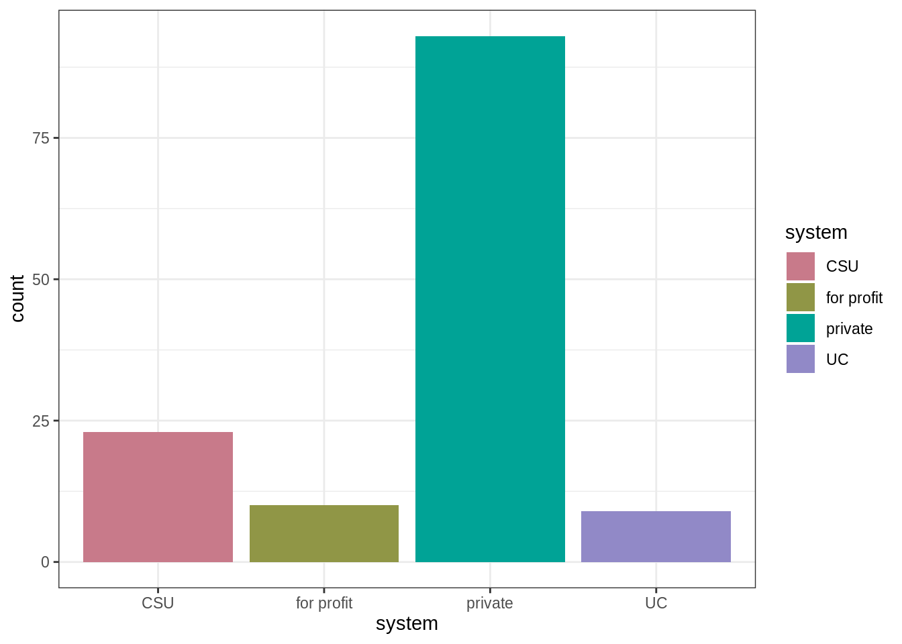

If we keep the statistic but change the geom, we can make a point version of a barplot. Or a version with text labels.
ggplot(tuition_df, aes(system, color = system)) +
stat_count(geom = 'point', size = 3)
ggplot(tuition_df, aes(system, color = system)) +
stat_count(geom = 'label', aes(label = after_stat(count)))

Because of ggplot’s layering system, we’re not restricted to just a barplot or one of these variations. We can combine geoms into a single plot.
ggplot(tuition_df, aes(system)) +
stat_count(geom = 'bar', aes(fill = system)) +
stat_count(geom = 'label', aes(label = after_stat(count)),
position = position_nudge(y = 5))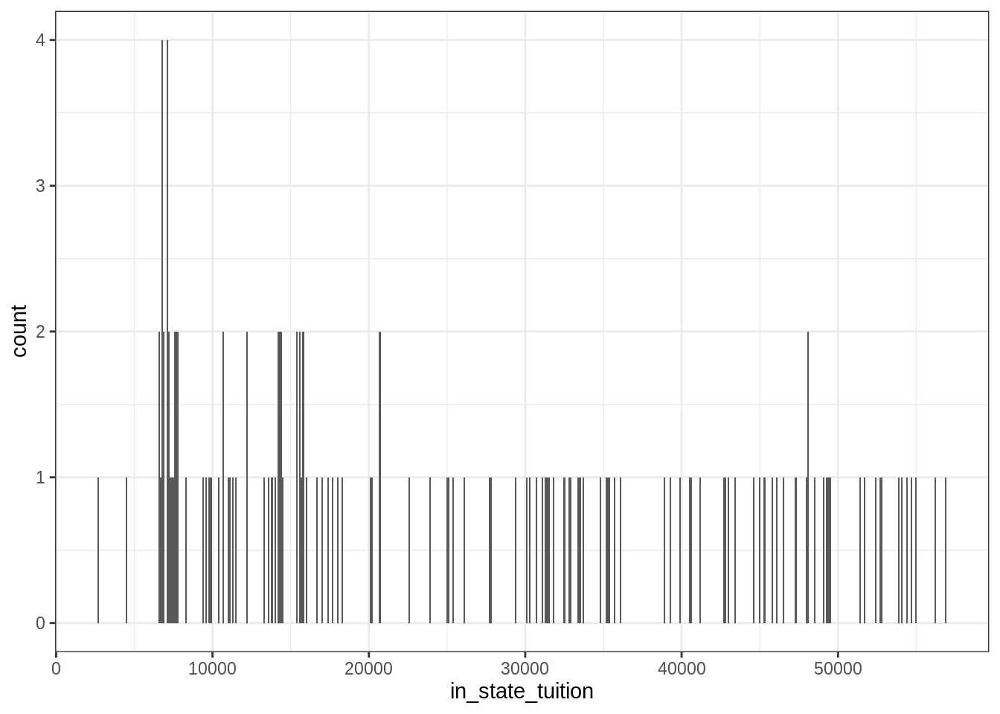
13.2.2 Numeric: Histograms and density plots
A histogram is a count of observations for a single categorical variable. It uses the same geom as the barplot, but a statistic of counts of binned values for a continuous variable.
ggplot(tuition_df, aes(in_state_tuition)) +
geom_histogram()## `stat_bin()` using `bins = 30`. Pick better value with `binwidth`.ggplot(tuition_df, aes(in_state_tuition)) +
stat_bin(geom = 'bar')## `stat_bin()` using `bins = 30`. Pick better value with `binwidth`.

binwidthcan have a dramatic effect on the appearance of the plotbinwidthis a free parameter in constructing the histogram as a model of the data
ggplot(tuition_df, aes(in_state_tuition)) +
geom_histogram(binwidth = 100)
ggplot(tuition_df, aes(in_state_tuition)) +
geom_histogram(binwidth = 1000)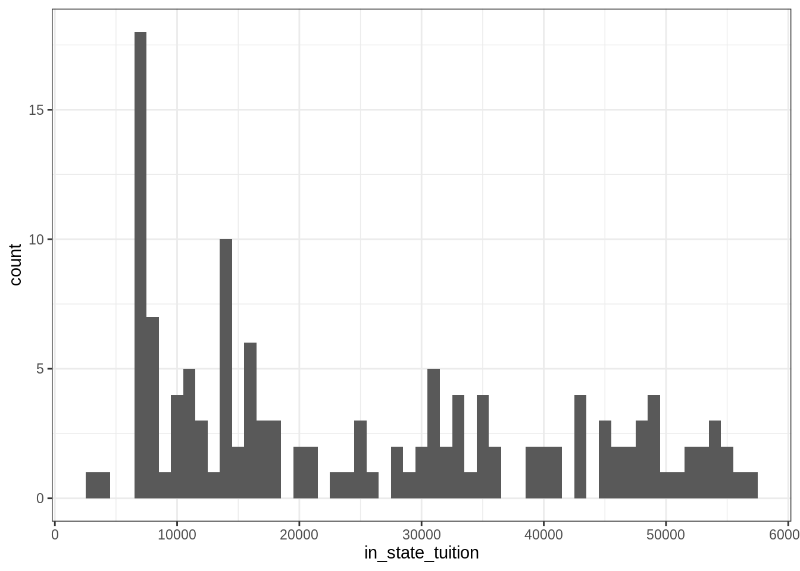
ggplot(tuition_df, aes(in_state_tuition)) +
geom_histogram(binwidth = 10000)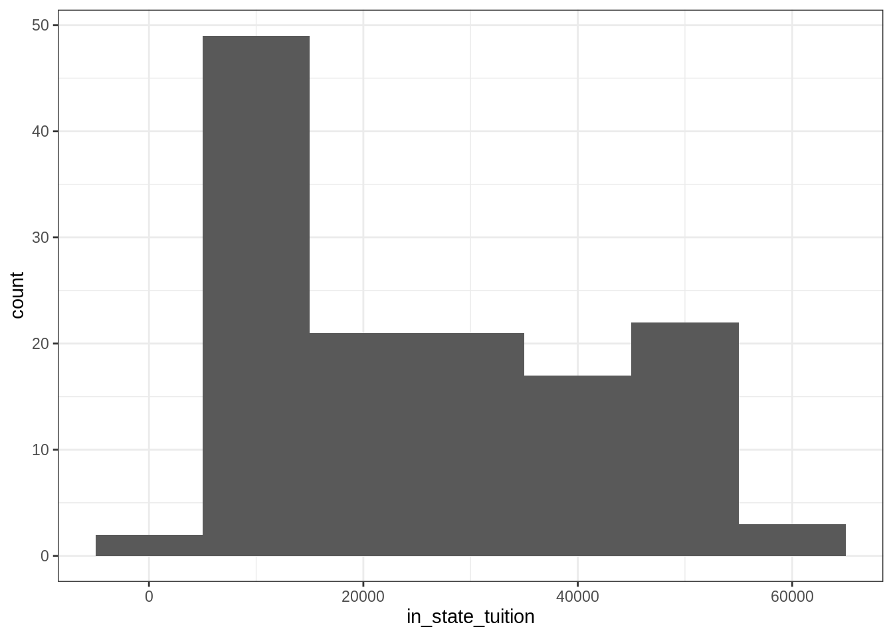
A frequency polygon uses the same count statistic, but displays the result with a line rather than columns.
ggplot(tuition_df, aes(in_state_tuition)) +
stat_bin(geom = 'bar')## `stat_bin()` using `bins = 30`. Pick better value with `binwidth`.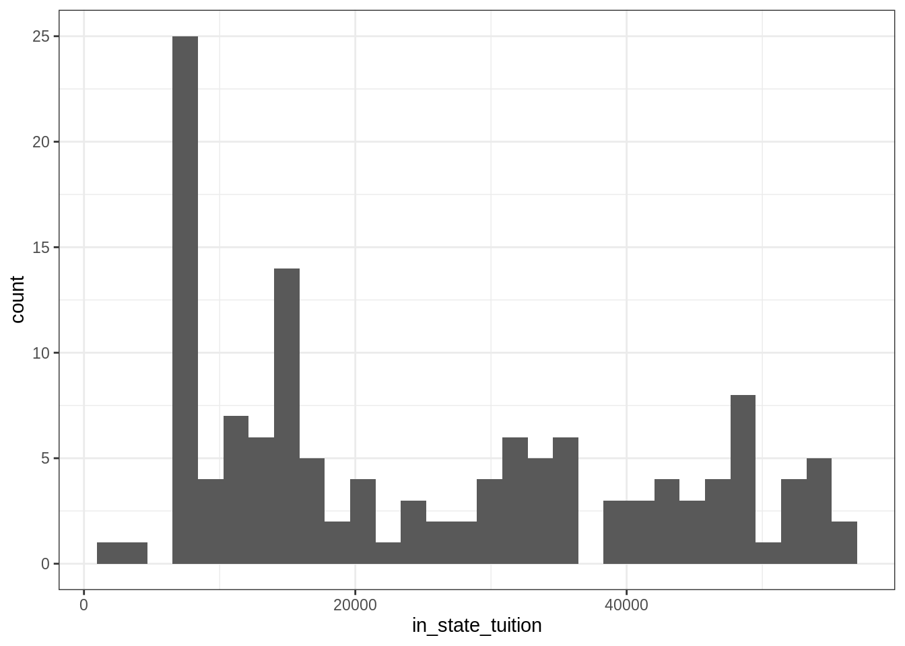
ggplot(tuition_df, aes(in_state_tuition)) +
stat_bin(geom = 'line')## `stat_bin()` using `bins = 30`. Pick better value with `binwidth`.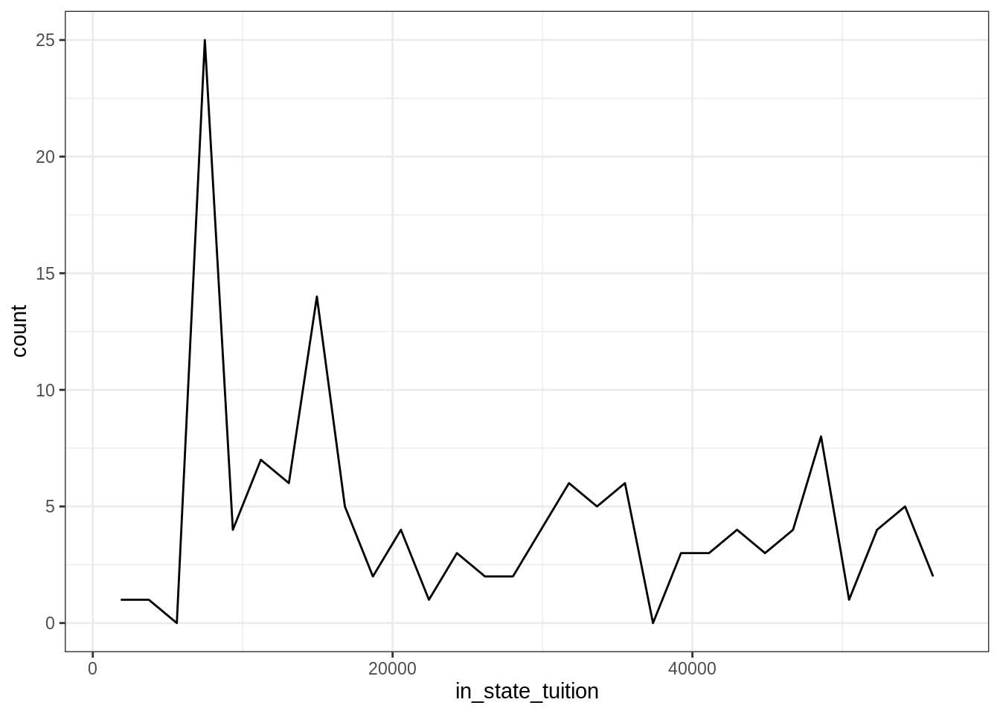
ggplot(tuition_df, aes(in_state_tuition)) +
geom_freqpoly()## `stat_bin()` using `bins = 30`. Pick better value with `binwidth`.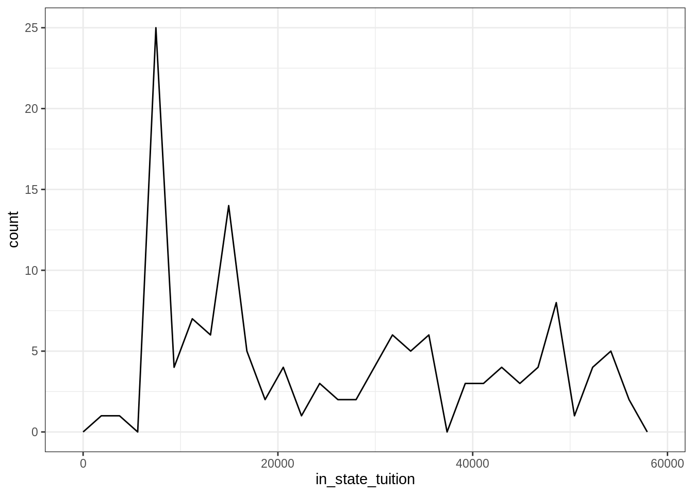
Density plots are a smoothed version of histograms.
- Often drawn with a rug, which indicates the locations of observed values on the x-axis
- Like histogram, is a model of the data
- Unlike histogram, people often overlook the free parameters (see
?density)
ggplot(tuition_df, aes(in_state_tuition)) +
geom_density() +
geom_rug()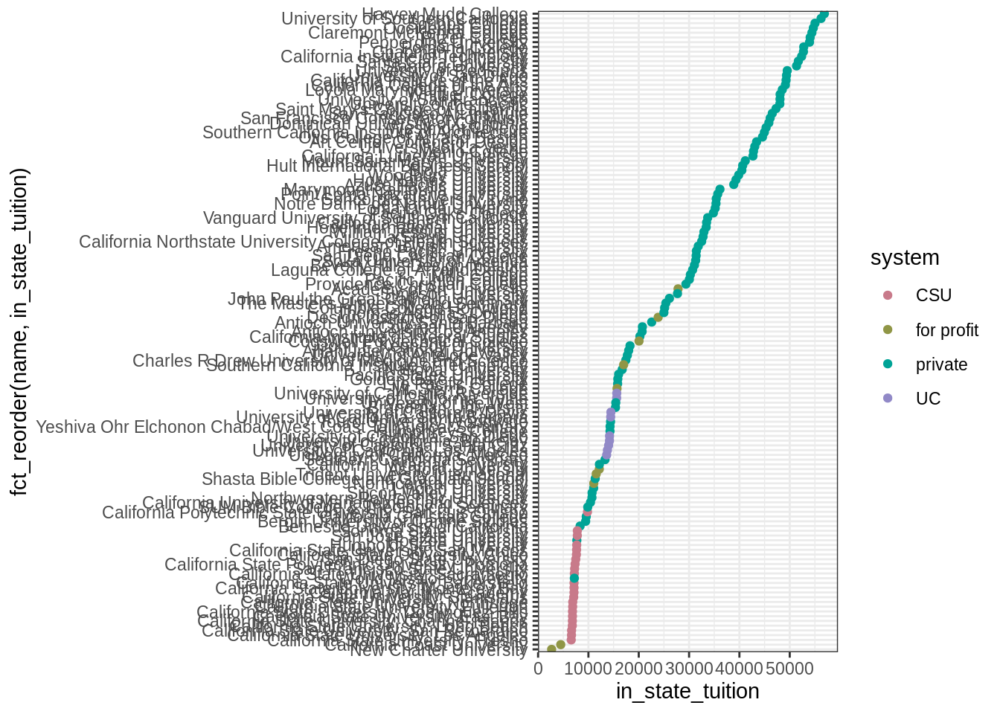
A strip plot simply plots the values on a single axis.
- Unlike all of the other examples here, it doesn’t involve any free parameters or other modeling decisions.
- But it’s also not very useful
ggplot(tuition_df, aes(in_state_tuition)) +
geom_point(y = 0) +
ylim(-.1, .1)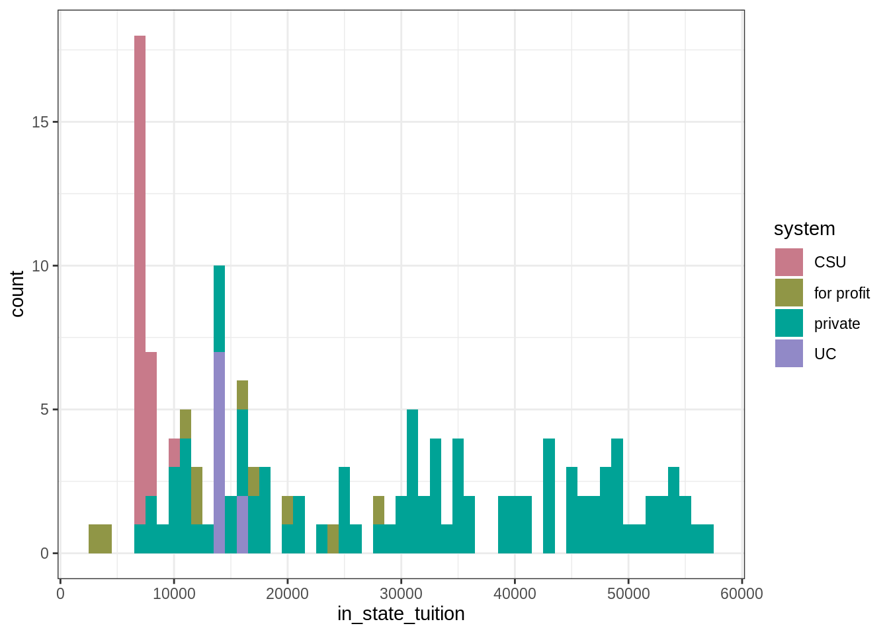
13.3 2D distributions: Categorical x Numeric
When there are only a few values of a categorical variable, it can be useful to simply plot points for individual values.
ggplot(tuition_df, aes(fct_reorder(name, in_state_tuition),
in_state_tuition,
color = system)) +
geom_point(aes(color = system)) +
coord_flip()
But we probably don’t care about the names of individual schools. One option is a stacked histogram, using color (fill) to indicate school system.
ggplot(tuition_df, aes(in_state_tuition, fill = system)) +
geom_histogram(binwidth = 1000)
These can be difficult to read when it’s not clear whether the bars are stacked on top of each other or layered, one behind the other. Here the bars are layered. The differences are very subtle but potentially important.
ggplot(tuition_df, aes(in_state_tuition, fill = system)) +
geom_histogram(binwidth = 1000, position = 'identity')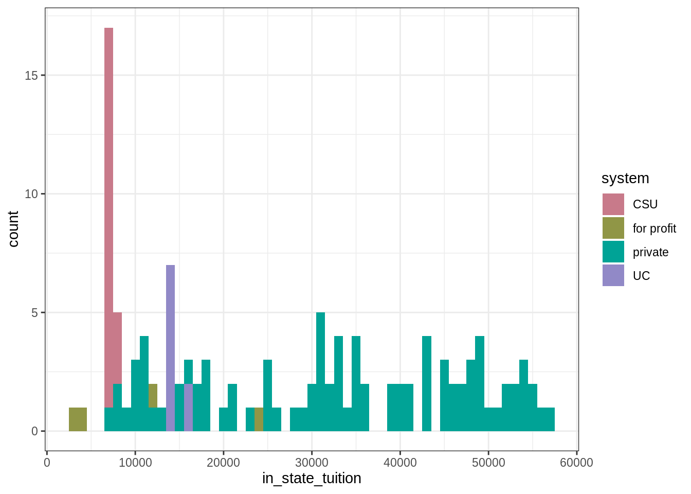
So it’s more common to put the categorical variable on the x-axis. Here’s a traditional boxplot. While color is strictly unnecessary, using color for the same categorical variable across plots helps us track relationships. Notice that we can change the way color is used by simply changing which aesthetic gets system.
ggplot(tuition_df, aes(system, in_state_tuition, color = system)) +
geom_boxplot()ggplot(tuition_df, aes(system, in_state_tuition, fill = system)) +
geom_boxplot()However, bowplots have many of the problems that Weissgerber et al. (2015) identify with bar-and-whisker plots. Neither is actually very good at showing non-gaussian distributions of the underlying data.
A violin plot is better for this. The violin plot calculates densities across the numerical variable (tuition) within groups defined by the categorical variable (system), and shows them symmetrically. We can use the draw_quantiles argument to show the medians, and scale = 'width' to get them to have the same width (rather than the same area, the default).
ggplot(tuition_df, aes(system, in_state_tuition, color = system)) +
geom_violin(draw_quantiles = .5, scale = 'width')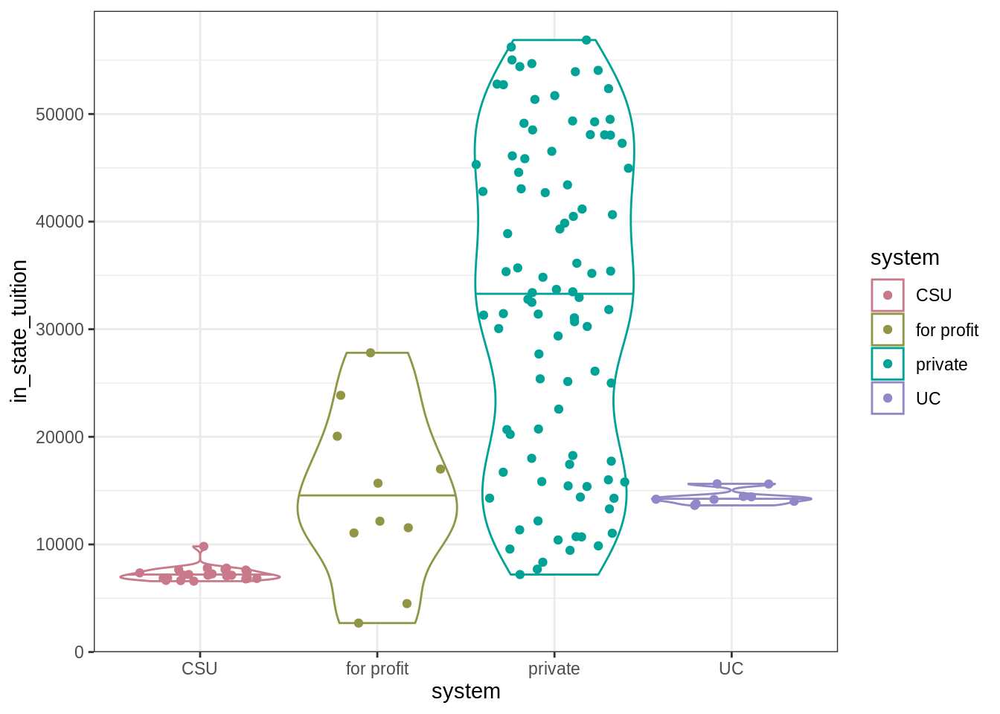
We can add points to this, using position = 'jitter' to reduce overplotting and alpha = .5 to make them 50% transparent.
ggplot(tuition_df, aes(system, in_state_tuition, color = system)) +
geom_violin(draw_quantiles = .5, scale = 'width') +
geom_point(position = 'jitter', alpha = .5)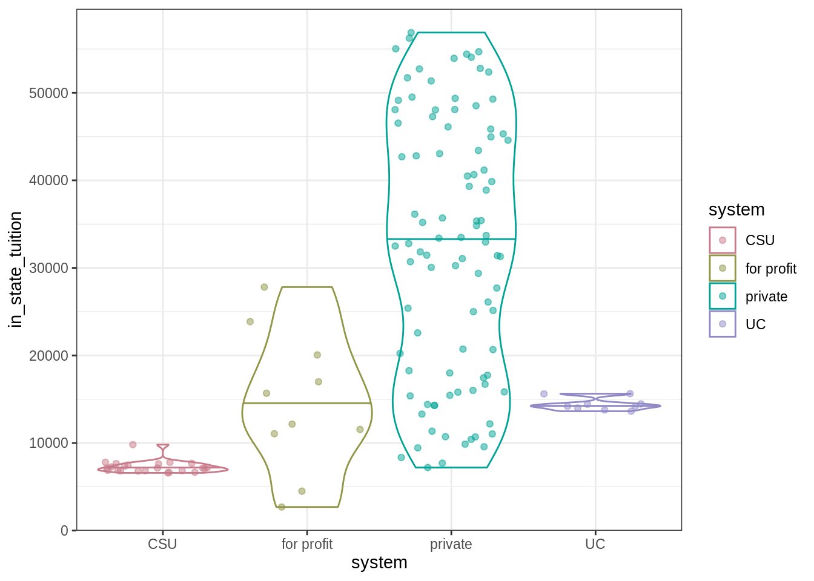
ggforce::geom_sina() tries to match the amount of jitter to the width of the violin plot, using the same scale argument. It’s a little better, because now the points aren’t outside of the violin. But it’s still hard to see a visual pattern.
ggplot(tuition_df, aes(system, in_state_tuition, color = system)) +
geom_violin(draw_quantiles = .5, scale = 'width') +
geom_sina(scale = 'width')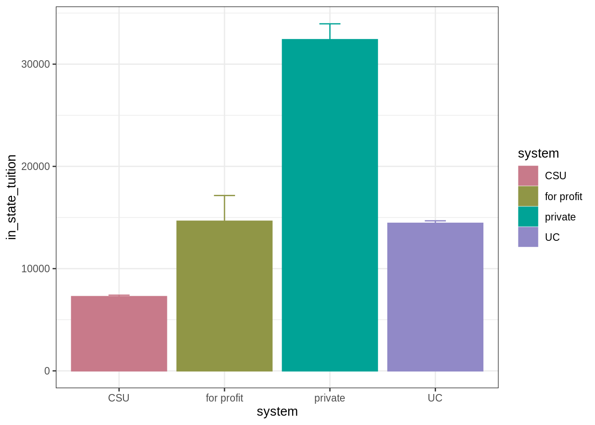
A beeswarm plot positions the points so that they cluster close together in the x-direction without too much overplotting. This allows us to show both the individual points and the density distribution, with roughly the same shape (after tweaking some parameters).
ggplot(tuition_df, aes(system, in_state_tuition, color = system)) +
geom_violin(draw_quantiles = .5, scale = 'width') +
geom_beeswarm(cex = 2)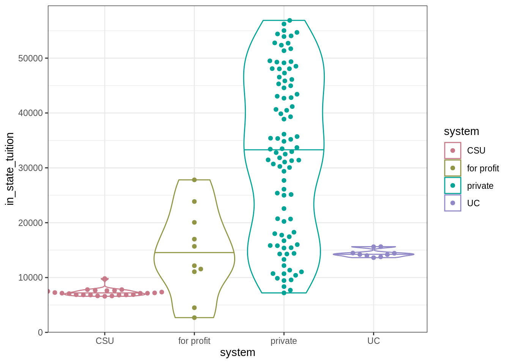
Using ggplot it is possible to create the bar-and-whiskers plot that Weissgerber et al. (2015) criticize. But now we have much better options.
ggplot(tuition_df, aes(system, in_state_tuition,
fill = system, color = system)) +
stat_summary(geom = 'bar') +
stat_summary(geom = 'errorbar', width = .2)## No summary function supplied, defaulting to `mean_se()`
## No summary function supplied, defaulting to `mean_se()`
13.4 Joining tuition and diversity data
The other numeric variables in the tuition data are variations on in-state tuition: they add room and board (in_state_total) or tuition for out-of-state tuitions (out_of_state_tuition), or both. For something more interesting, we’ll join the tuition data to the diversity data.
Recall that div_df has one row for each combination of school and demographic group (category).
div_df## # A tibble: 5,027 x 6
## name total_enrollment state category enrollment share
## <chr> <dbl> <chr> <chr> <dbl> <dbl>
## 1 Ashford University 51237 Californ… Women 36116 0.705
## 2 Ashford University 51237 Californ… American Indian / Alaska Native 482 0.00941
## 3 Ashford University 51237 Californ… Asian 645 0.0126
## 4 Ashford University 51237 Californ… Black 18727 0.365
## 5 Ashford University 51237 Californ… Hispanic 4792 0.0935
## 6 Ashford University 51237 Californ… Native Hawaiian / Pacific Islan… 405 0.00790
## 7 Ashford University 51237 Californ… White 23596 0.461
## 8 Ashford University 51237 Californ… Two Or More Races 1539 0.0300
## 9 Ashford University 51237 Californ… Unknown 955 0.0186
## 10 Ashford University 51237 Californ… Non-Resident Foreign 96 0.00187
## # … with 5,017 more rowsFirst we’ll do some checks for the hazards discussed in the “Joins” chapter.
## Schools in tuition_df that will be missing after we join w/ div_df
anti_join(tuition_df, div_df, by = 'name') %>%
pull(name)## [1] "Alliant International University"
## [2] "Antioch University Los Angeles"
## [3] "Antioch University Santa Barbara"
## [4] "Beverly Hills Design Institute"
## [5] "California Coast University"
## [6] "California Northstate University College of Health Sciences"
## [7] "Charles R Drew University of Medicine and Science"
## [8] "Concordia University Irvine"
## [9] "Hult International Business School"
## [10] "Laguna College of Art and Design"
## [11] "Lincoln University"
## [12] "Mount Saint Mary's University"
## [13] "New Charter University"
## [14] "Northcentral University"
## [15] "Northwestern Polytechnic University"
## [16] "Pacific Union College"
## [17] "Silicon Valley University"
## [18] "Simpson University"
## [19] "SUM Bible College & Theological Seminary"
## [20] "The Master's University and Seminary"## Because div_df isn't filtered down to 2-year schools, it's okay if a lot of its schools are left out
anti_join(div_df, tuition_df, by = 'name') %>%
nrow()## [1] 3762## Checking duplications
comb_df_draft = inner_join(tuition_df, div_df, by = 'name')
nrow(comb_df_draft)## [1] 1265nrow(distinct(comb_df_draft))## [1] 1265## 135 schools in tuition_df, minus 20 rows not matched
comb_df_draft %>%
select(name) %>%
distinct() %>%
nrow()## [1] 115## We should have one row in comb_df_draft for each school-category combination
comb_df_draft %>%
select(name, category) %>%
distinct() %>%
nrow()## [1] 1265## Check column names
names(comb_df_draft)## [1] "name" "state.x" "state_code" "type"
## [5] "degree_length" "room_and_board" "in_state_tuition" "in_state_total"
## [9] "out_of_state_tuition" "out_of_state_total" "system" "total_enrollment"
## [13] "state.y" "category" "enrollment" "share"Now we’ll actually do the join.
comb_df = inner_join(div_df, tuition_df, by = c('name', 'state'))13.5 School Diversity Violin Plots
Because of the way div_df is structured, it makes sense to separate all of the plots for it into separate panels using the category variable. We’ve used facet_wrap() in this way before.
ggplot(comb_df, aes(system, share, color = system)) +
geom_violin(scale = 'width',
draw_quantiles = .5) +
geom_beeswarm(alpha = .25, cex = 2) +
facet_wrap(vars(category), scales = 'free')## Warning in regularize.values(x, y, ties, missing(ties), na.rm = na.rm): collapsing to unique 'x'
## values
## Warning in regularize.values(x, y, ties, missing(ties), na.rm = na.rm): collapsing to unique 'x'
## values
## Warning in regularize.values(x, y, ties, missing(ties), na.rm = na.rm): collapsing to unique 'x'
## values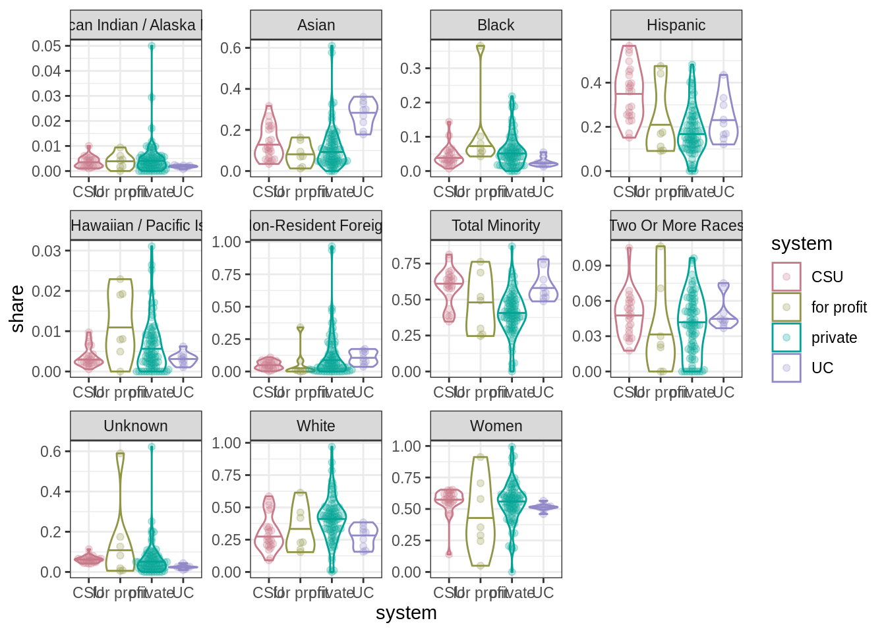
- No school in the data has more than 5% American Indian/Alaska Native students.
- The numbers are even lower for Native Hawaiian/Pacific Islanders.
- Just a few schools have more than 10% Black students.
- The median UC and CSU schools have greater “Total Minority” students than the private schools.
- But there’s a lot of variation within the CSU system and across private schools.
- UC and CSU schools have different groups of minority students
- UCs have a higher share of Asian students than Cal States
- Cal States have a higher share of Hispanic students than UCs
13.6 2D Distributions: Numeric x Numeric
A point geom gives us a basic scatterplot. geom_smooth() adds a predictive model. By default, this predictive model is either a LOESS (also called local regression; for smaller datasets) or a generalized additive model (GAM; for larger datasets).
ggplot(comb_df, aes(in_state_tuition, share)) +
geom_point(aes(color = system)) +
geom_smooth(color = 'black') +
facet_wrap(vars(category), scales = 'free')## `geom_smooth()` using method = 'loess' and formula 'y ~ x'
13.6.1 Discussion question
Incorporating a regression model into an exploratory analysis like this will almost always be a fraught decision. On the one hand, it aids pattern discovery, and isn’t necessarily a radical step beyond plotting the data if we already think of the plot itself as a model. On the other hand, any regression model involves substantive assumptions, and it can be difficult to interrogate those assumptions when the model is used in this way.
What other considerations should we take into account when deciding whether to add a model to an exploratory plot?
13.7 Text geoms
The final plot highlights how easy it is to extend a traditional scatterplot using ggplot. First, the text geom prints strings of text (see also the label geom). This is especially useful when we want to identify individual observations but have too many values for colors or shapes. To accommodate the long labels, we expand the range of the x-values in the coordinate system and turn off clipping at the plot margins. We also scale the size of the points to campus size, which suggests a correlation between size (which in this case is tightly correlated with age and prestige) and Hispanic share. Aesthetics can be handled for the entire plot or separately for each layer, as needed to create effective cognitive affordances.
comb_df %>%
filter(system == 'UC', category == 'Hispanic') %>%
ggplot(aes(in_state_tuition, share)) +
geom_point(aes(size = total_enrollment), alpha = .5) +
geom_text(aes(label = name)) +
coord_cartesian(clip = 'off', xlim = c(13000, 16500))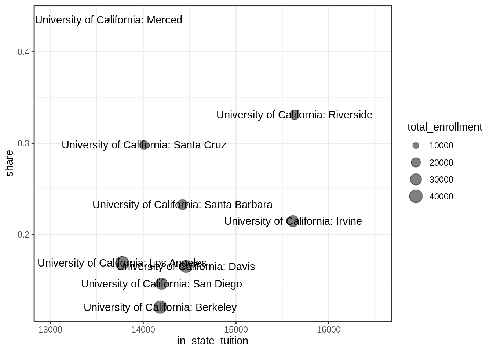
13.8 Multivariate distributions
- (This should probably get moved to the next chapter, but I’ll leave it here just in case we make it this far in class.)
ggplot(tuition_df, aes(.panel_x, .panel_y, color = system)) +
geom_autopoint(color = 'blue') +
geom_autodensity(fill = NA, position = 'identity') +
geom_autopoint() +
geom_mark_ellipse(expand = .05) +
stat_function(fun = identity, inherit.aes = FALSE) +
facet_matrix(vars(in_state_tuition, in_state_total,
out_of_state_tuition, out_of_state_total),
layer.upper = c(1, 5),
layer.diag = 2,
layer.lower = c(3, 4, 5))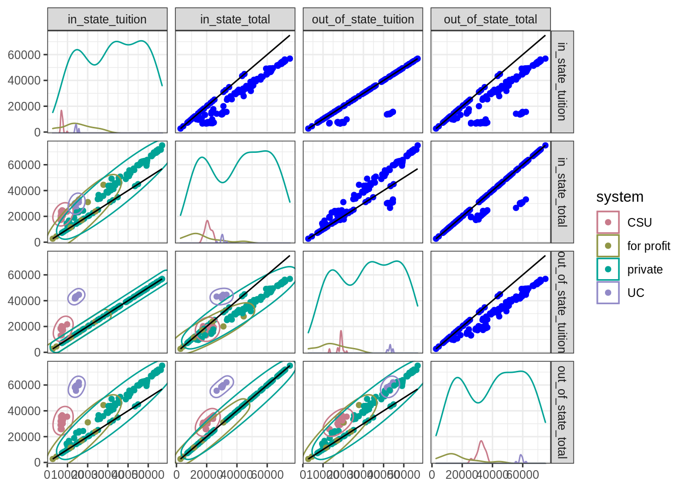
13.9 Lab
Once you’re familiar with joins and the basics of ggplot, you’re ready to tackle the next lab, which is available here: https://github.com/data-science-methods/lab_w06_covid
References
Weissgerber, Tracey L., Natasa M. Milic, Stacey J. Winham, and Vesna D. Garovic. 2015. “Beyond Bar and Line Graphs: Time for a New Data Presentation Paradigm.” PLoS Biol 13 (4): e1002128. https://doi.org/10.1371/journal.pbio.1002128.